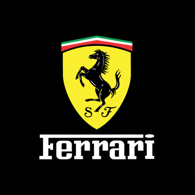
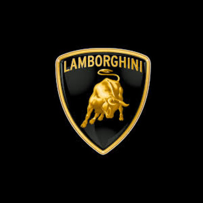
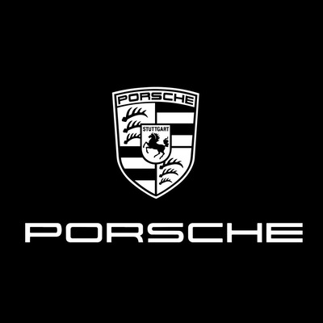

Car Brands





AutoNation stands as a pinnacle in the automotive realm, offering a diverse array of vehicles that epitomize excellence. From the sleek lines of luxury sedans to the robust profiles of off-road adventurers, our curated selection caters to every discerning taste. More than conveyances, cars become extensions of identity, embodying individuality and aspirations. Behind the wheel, the world expands into an endless horizon of exploration and adventure. AutoNation fuels this spirit with vehicles primed for the journey, whether a cross-country odyssey or urban escapade. Technological marvels adorn modern cars, from safety innovations to cutting-edge infotainment systems, enriching every drive. Yet, beyond the metal and circuits lies AutoNation's commitment to customer satisfaction. Our dedicated staff ensures a seamless experience, guiding clients through the selection process with expertise and care. Whether seeking luxury, performance, or eco-friendliness, AutoNation promises to match every need and desire with automotive excellence. Visit AutoNation today and embrace the thrill of the road ahead.
Cars are more than mere machines; they are embodiments of human ingenuity, dreams manifested in metal, rubber, and glass. They represent freedom, adventure, and the pursuit of the unknown. In their graceful curves and powerful engines, we find not just a means of transportation, but a gateway to the world. There's a certain magic in the way a car becomes an extension of oneself, a reflection of personality and aspirations. From the sleek lines of a sports car to the sturdy frame of an SUV, each model tells a story, evoking emotions and memories with every turn of the key. Behind the wheel, time seems to stand still as the road stretches out before us, inviting exploration and discovery. The hum of the engine becomes a symphony, harmonizing with the rhythm of our heartbeat as we navigate the twists and turns of life's journey. But cars are more than just vehicles; they are canvases waiting to be painted with the colors of our dreams. They are the catalysts for adventure, the catalysts for unforgettable experiences that linger in the memory long after the journey has ended. And yet, amidst the beauty and wonder of the automotive world, there lies a deeper truth: that cars are not just objects of desire, but symbols of human achievement and progress. They are the result of countless hours of research, innovation, and dedication, a testament to the boundless potential of the human spirit. In the end, cars are more than just machines; they are expressions of our deepest desires and aspirations. They are symbols of freedom, adventure, and the indomitable human spirit. And in their beauty, we find not just a means of transportation, but a reflection of ourselves and the world we inhabit.